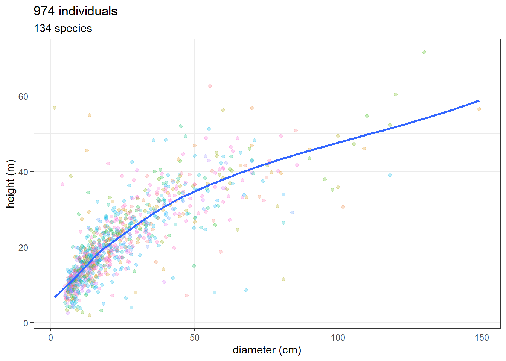
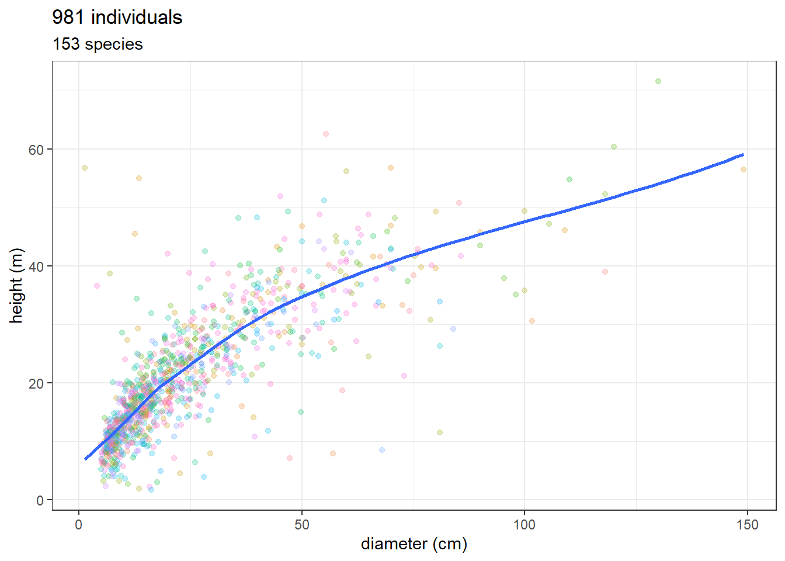
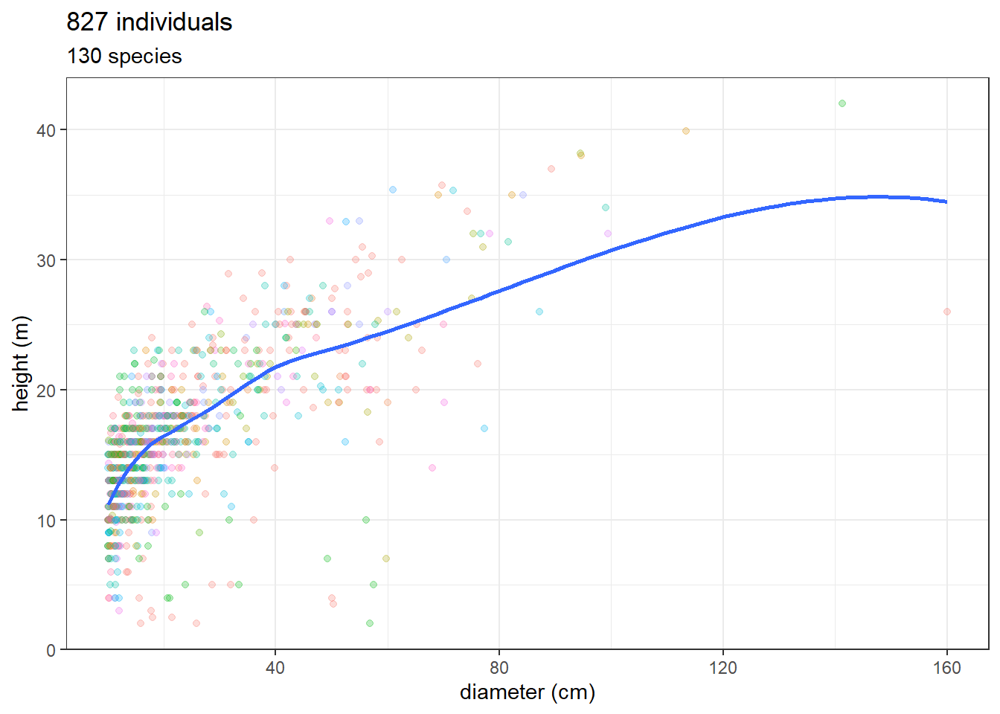
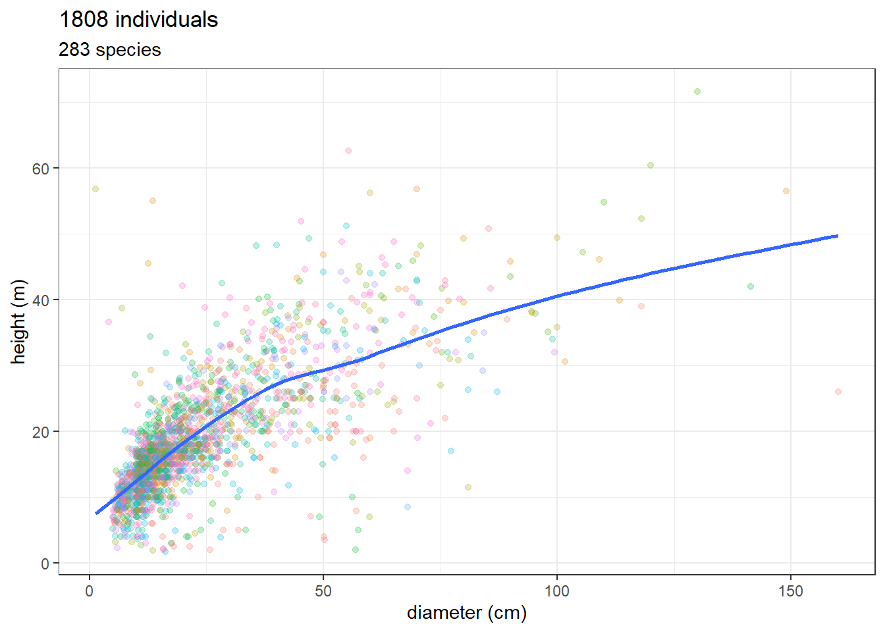
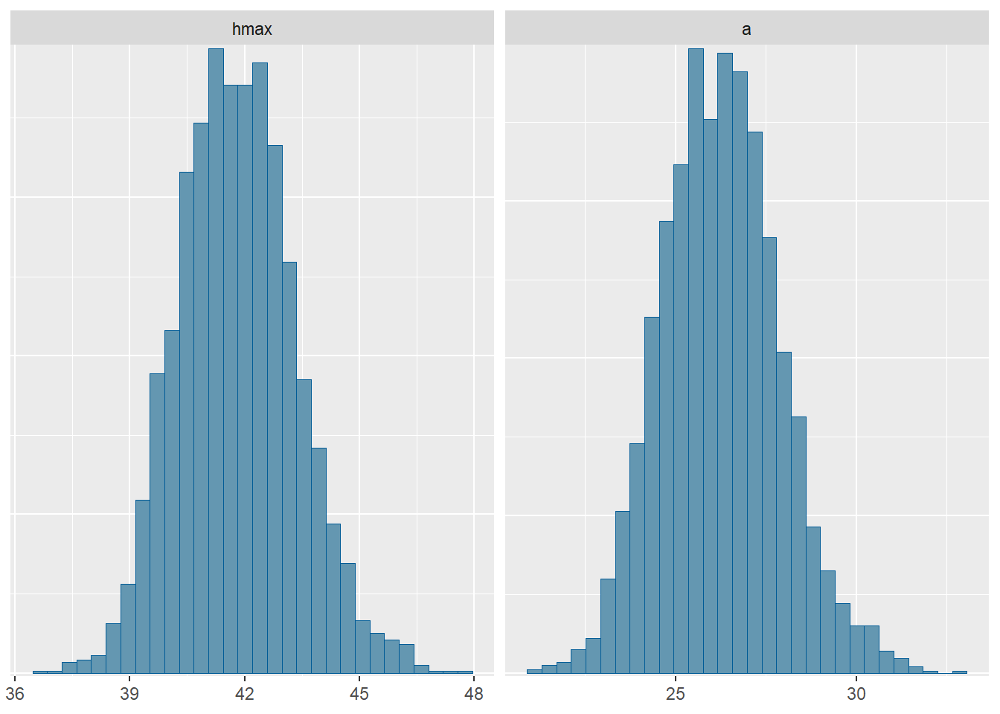
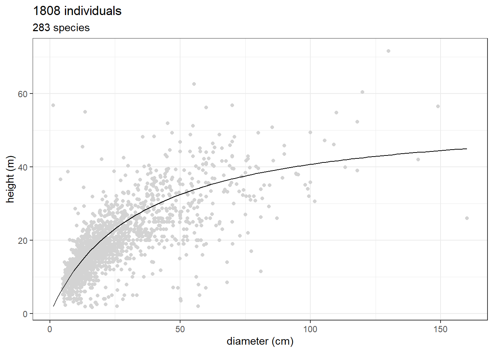

9 Modelling DBH x Height
9.1 Introduction
Permanent plot data lack total height, a critical variable for accurately estimating biomass. We obtained total heights for a subset of trees using LiDAR data (see Chapter 7). Additionally, we have other Forest Inventories conducted in the Jamari National Forest that include both DBH and total height.
We will use these data to model the DBH–Total Height relationship and derive a locally adjusted allometric equation to estimate the total height of trees in the permanent plot dataset. By combining total height with DBH, we expect to achieve more accurate biomass estimates for the permanent plots.
The modelling pipeline was developed by Sylvain Schmidt.
9.2 Lecture
- About tree height allometry: Molto et al. (2014)
- TALLO database: Jucker et al. (2022)
cmdstanrinstallation: https://mc-stan.org/cmdstanr/articles/cmdstanr.htmlstanprogramming: https://mc-stan.org/
9.3 Setup
You only need the tidyverse package for table manipulation and figures preparation, cmdstanr, brms, and bayesplot for Bayesian statistics.
9.4 Data
Data are tree hight and diameter from the TALLO database (Jucker et al. 2022) itself using dos-Santos et al. (2022) data for Jamari. Longitude and latitude are in degrees, so 1 degree is about 110 km at the equator, and we use a buffer of 10km. We have a total of 974 individuals and 134 species.
Code
lon <- -62.99
lat <- -9.11
buffer <- 10/110
data <- read_csv("data/forest_inventory/tallo.csv") %>%
filter(longitude >= lon-buffer, longitude <= lon+buffer,
latitude >= lat-buffer, latitude <= lat+buffer) %>%
mutate(species = paste(genus, species)) %>%
select(tree_id, species, height_m, stem_diameter_cm)
ggplot(data, aes(stem_diameter_cm, height_m)) +
geom_point(aes(col = species), alpha = 0.25) +
theme_bw() +
geom_smooth(se = FALSE) +
scale_color_discrete(guide = "none") +
xlab("diameter (cm)") + ylab("height (m)") +
ggtitle(paste(nrow(data), "individuals"),
paste(unique(data$species) %>% length(),
"species"))
Let’s see if data from dos-Santos et al. (2022) area the same. Filter only tree (type == “O”) and alive (dead == “A”).
Code
dos_santos <- list.files("data/forest_inventory",
pattern = "^JAM.*\\.csv$",
full.names = T)
dos_santos_df <- dos_santos %>%
purrr::map_df(~ read_csv(.x,
show_col_types = FALSE,
col_types = cols(.default = col_character()))) %>%
filter(type == "O" ,
dead == "A",
!is.na(transect))
ggplot(dos_santos_df, aes(as.numeric(DBH), as.numeric(Htot))) +
geom_point(aes(col = scientific_name), alpha = 0.25) +
theme_bw() +
geom_smooth(se = FALSE) +
scale_color_discrete(guide = "none") +
xlab("diameter (cm)") + ylab("height (m)") +
ggtitle(paste(nrow(dos_santos_df), "individuals"),
paste(unique(dos_santos_df$scientific_name) %>% length(),
"species"))
Let’s see Brazilian National Forest Inventory data on Flona de Jamari. We will load the full inventory from Rondônia state and then we filter only the four plots inside Flona de Jamari (plots RO_74, RO_75, RO_95, RO_96)
Code
ifn_data <- read.csv2("data/forest_inventory/IFN_DAP10_Rondônia_disp-set2025.csv",
dec = ",")
ifn_data_jamari <- subset(ifn_data,
ua == "RO_74" | ua == "RO_75" | ua == "RO_95" | ua == "RO_96")
ggplot(ifn_data_jamari, aes(as.numeric(dap), ht)) +
geom_point(aes(col = scientific_name), alpha = 0.25) +
theme_bw() +
geom_smooth(se = FALSE) +
scale_color_discrete(guide = "none") +
xlab("diameter (cm)") + ylab("height (m)") +
ggtitle(paste(nrow(ifn_data_jamari), "individuals"),
paste(unique(ifn_data_jamari$scientific_name) %>% length(),
"species"))
Merging two datasets (dos-Santos et al. (2022) and IFN) in a standardized data frame.
Code
df1_clean <- dos_santos_df %>%
select(scientific_name, DBH, Htot) %>%
mutate(DBH = as.numeric(DBH),
Htot = as.numeric(Htot),
source = "dos_santos") %>%
rename(
dbh = DBH,
total_height = Htot
)
df2_clean <- ifn_data_jamari %>%
select(scientific_name, dap, ht) %>%
mutate(dap = as.numeric(dap),
source = "IFN") %>%
rename(
dbh = dap,
total_height = ht
)
jam_for_inv <- bind_rows(df1_clean, df2_clean)
ggplot(jam_for_inv, aes(dbh, total_height)) +
geom_point(aes(col = scientific_name), alpha = 0.25) +
theme_bw() +
geom_smooth(se = FALSE) +
scale_color_discrete(guide = "none") +
xlab("diameter (cm)") + ylab("height (m)") +
ggtitle(paste(nrow(jam_for_inv), "individuals"),
paste(unique(jam_for_inv$scientific_name) %>% length(),
"species"))
9.5 Model
We model tree height \(h\) in function of tree diameter \(d\) as:
\[ h \sim logN( \frac{h_{max}\times d}{a + d} , \sigma) \]
with \(h_{max}\) the maximum tree height and \(a\).
9.6 Example with cmdstanr
Code
data {
int<lower=0> N;
vector[N] h;
vector[N] d;
}
parameters {
real<lower=1, upper=100> hmax;
real<lower=0> a;
real<lower=0> sigma;
}
model {
log(h) ~ normal(log(hmax*d ./ (a+d)), sigma);
}Code
variable mean median sd mad q5 q95 rhat ess_bulk ess_tail
lp__ 880.18 880.48 1.27 1.01 877.63 881.56 1.00 1328 1702
hmax 41.81 41.75 1.52 1.52 39.46 44.39 1.01 1309 1398
a 26.25 26.23 1.63 1.65 23.70 29.00 1.00 1326 1390
sigma 0.37 0.37 0.01 0.01 0.36 0.38 1.00 1957 1654`stat_bin()` using `bins = 30`. Pick better value `binwidth`.
Code
ggplot(jam_for_inv, aes(dbh, total_height)) +
geom_point(col = "lightgrey") +
stat_function(fun = function(x) 54.50*x/(33.90+x)) +
theme_bw() +
xlab("diameter (cm)") + ylab("height (m)") +
ggtitle(paste(nrow(jam_for_inv), "individuals"),
paste(unique(jam_for_inv$scientific_name) %>% length(),
"species"))